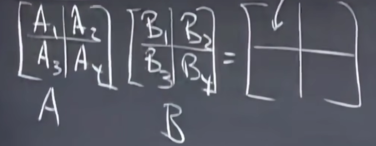

单元一：方程组、矩阵、消元、向量空间、秩、解方程
课程是链接
Gilbert Strang老爷子的MIT 18.06 Linear Algebra。非常经典的一门课程，是理解性讲课而不是像国内多数高校式的应试性讲课。
一. 方程组的几何解释
考虑一个一元二次方程组，我们的几何理解就是一个方程是一条直线。这样的理解是初高中理解
但是到了大学，我们应该竖着去看方程组，也就是x乘一个列向量，y乘一个列向量，加起来，得到一个列向量，也就是这种形式：
\(x \cdot [2, -1]^\mathrm{T} + y \cdot [-1, 2]^\mathrm{T} = [0, 3]\)
上面这种“竖着理解方程组的方式”，叫做“线性组合”，是贯穿这门课的一个思想
考虑线性组合的几何意义，假设有m个未知数，n个方程。
那么就有m个列向量。首先把这m个维度为\(\mathbb{R}^{n}\)的列向量画到\(\mathbb{R}^n\)上。
然后m个未知数就是这m个向量的系数，去线性组合这些向量，得到答案向量。
是不是很巧妙？在2维以上的空间内，用向量的线性组合去考虑问题会大大的简化问题。
为了不每次都写出上面那个\(x \cdot [2, -1]^\mathrm{T} + y \cdot [-1, 2]^\mathrm{T} = [0, 3]\)这种线性组合，太麻烦了，所以我们引入了矩阵来简化表达
具体来说，一个m个未知数，n个方程的方程组，用系数矩阵\(A\)、未知数向量\(\textbf{x}\)、答案向量\(b\)来描述这个方程组
当你看到一个形如\(A\textbf{x} = b\)的方程的时候，你要明白，本质就是m个维度为\(\mathbb{R}^n\)的向量的线性组合 = 常向量的求解问题
现在我们思考一个问题：n个方程，m个未知数的方程组是否永远有解？
用线性组合的观点就是，m个维度为\(\mathbb{R}^n\)的向量的线性组合是否可以覆盖整个\(\mathbb{R}^n\)空间？
可以发现，问题的关键，就是在这m个向量身上，换句话说，也就是在系数矩阵\(A\)身上。这m个向量具有什么样的特点 / \(A\)具有什么样的特点时，方程组会有解？会有几个解？这就是以后会讨论到的问题。
- 相信看到这，已经能感受到线性代数的绝妙吸引力了。它能带你在高维空间里遨游，让你熟练的玩弄高维空间。
- 数学真神奇，不是吗？
二. 矩阵消元
这节学习的是用消元法解方程组，计算机解方程都是用这种方法
首先先按国内大部分高校的讲法讲一遍：
消元就是初高中学的那个消元，消元前后矩阵是等价的，对系数矩阵进行求上三角过程
其实求上三角的过程，就是在依次确定基向量，基向量的意思就是能对解空间产生贡献的向量。假设向量俩俩正交，那么它们都是基向量。
对于n个方程，m个未知数的方程。若通过求上三角后，有k个主元（主元就是每列最后一个非零元素），说明有k个维度为\(\mathbb{R}^n\)的基向量，那么若\(k \ge n\)，则方程组必定有解，因为此时m个向量可以线性组合出整个\(\mathbb{R}^n\)空间。反之，则不一定有解。
换句话说，有几个主元，方程组的向量们就能线性组合出几维的空间
回到正题，如何求解方程组呢？（考虑一定有解的情况）
首先把答案向量\(b\)加入到\(A\)中作为新的一列，此时称\(A\)为增光矩阵\(\overline{A}\)
对\(\overline{A}\)消元求上三角，然后将消元后的矩阵重新写成方程组去算就行了
好了，现在用我在mit学到的讲法讲一遍：
上面的讲法中，对\(\overline{A}\)消元求上三角的过程，我们的视角还是用初高中的做法去做的，但现在，仍然是消元求上三角的过程，我想用矩阵去做
在做之前，我想介绍“行的线性组合“
我们之前讲了，对于方程\(A\textbf{x}=b\)，我们的理解方式就是看成m个列向量的线性组合，这其实是“列的线性组合“
现在我们来看这个方程：\(\textbf{x}^{\mathrm{T}}A = b^{\mathrm{T}}\)，\(\textbf{x}^{\mathrm{T}}\)是一个有n个未知数的行向量，\(A\)仍然是一个\(\mathbb{R}^{n \times m}\)的矩阵，\(b^{\mathrm{T}}\)是一个常行向量。
此时我们需要把这个方程理解为“行的线性组合“，也就是\(A\)的每一行就是一个向量，然后这些向量线性组合，系数就是\(x^{\mathrm{T}}\)里的分量。
- ok，回到对矩阵的消元。
假设有一个矩阵：
\[ \left[\begin{array}{c} 1 & 2 & 1 \\ 3 & 8 & 1 \\ 0 & 4 & 1 \end{array}\right] \]
首先我想用第一行把(2, 1)消掉，那么第一行是不变的，第三行是不变的，第二行应该变为\([0, 2, -2]\)，也就是第二行加上负三倍的第一行。首先第一行是不变的，利用“行的线性组合”思想，我们可以对\(A\)左乘一个行向量：
\[ [1, 0, 0]\left[\begin{array}{c} 1 & 2 & 1 \\ 3 & 8 & 1 \\ 0 & 4 & 1 \end{array}\right]=[1, 2, 1] \]
然后第三行也是不变的，所以我们继续左乘：
\[ \left[\begin{array}{c} 1 & 0 & 0 \\ ? & ? & ? \\ 0 & 0 & 1 \end{array}\right] \left[\begin{array}{c} 1 & 2 & 1 \\ 3 & 8 & 1 \\ 0 & 4 & 1 \end{array}\right]= \left[\begin{array}{c} 1 & 2 & 1 \\ ? & ? & ? \\ 0 & 4 & 1 \end{array}\right] \]
显然对于结果矩阵的第二行，我们是想让\(A\)的原第二行加上三倍负第一行的，所以线性组合就是(-3) * 第一行 + (1) * 第二行 + (0) * 第三行，所以把系数填进左乘的矩阵，即可得到：
\[ \left[\begin{array}{c} 1 & 0 & 0 \\ -3 & 1 & 0 \\ 0 & 0 & 1 \end{array}\right] \left[\begin{array}{c} 1 & 2 & 1 \\ 3 & 8 & 1 \\ 0 & 4 & 1 \end{array}\right]= \left[\begin{array}{c} 1 & 2 & 1 \\ 0 & 2 & -2 \\ 0 & 4 & 1 \end{array}\right] \]
这里我们把左乘的这个矩阵记为\(E_{21}\)（因为是想对(2, 1)这个位置进行消除）。这种矩阵叫做初等矩阵
下一步做法依次类推：
\[ \left[\begin{array}{c} 1 & 0 & 0 \\ 0 & 1 & 0 \\ 0 & -2 & 1 \end{array}\right] \left[\begin{array}{c} 1 & 2 & 1 \\ 0 & 2 & -2 \\ 0 & 4 & 1 \end{array}\right]= \left[\begin{array}{c} 1 & 2 & 1 \\ 0 & 2 & -2 \\ 0 & 0 & 5 \end{array}\right] \]
同样的，我们把左乘的这个矩阵叫做\(E_{32}\)，因为是对位置(3, 2)消除
以上，就是用矩阵去描述消元的全过程。最后，用矩阵来做个大总结的话，就是：
\(E_{32}E_{21}A = U\)
- 这里再跑点题，多讲一下“初等矩阵”这个概念
- 前面的\(E_{21}, E_{32}\)本质上，就是对矩阵\(A\)做了一次"操作"，也就是某行减掉了另一行的几倍。
- 所以我们把能"操作"矩阵的矩阵称为初等矩阵
- 除了某行减掉了另一行几倍，当然还有别的操作，例如交换两行。
- 很容易啊，一样用"行的线性组合"思想，假设要交换第一第二行，那么初等矩阵的第一行就是[0, 1, ..., 0]，第二行就是[1, 0, ..., 0]
- 对于能交换矩阵行和列的矩阵，也是一种初等矩阵，我们记为\(P\)（置换矩阵）
三. 矩阵乘法和逆矩阵
假设矩阵\(A\)乘\(B\)得到矩阵\(C\)。考虑\(C\)的某个元素\(c_{ij}\)，我们都知道这个元素是由\(A\)的第i行与\(B\)的第j列做点乘得到的。
但是我们如果再用“行的线性组合”的思想，就可以知道，首先，\(C\)的第i行是由\(B\)的每一行线性组合得到的，系数是\(A\)的第i行。那如果我只看\(C\)第i行的第j个，那么也就是\(B\)每一行的第j个（也就是\(B\)的第j列）的线性组合，系数是\(A\)的第i行。从这个角度来看，就清晰多了。
好的，我们前面讨论的矩阵都是方阵。但其实，矩阵相乘不一定是方阵。假设\(A\)为\(\mathbb{R}^{m \times n}\), \(B\)为\(\mathbb{R}^{n \times p}\), \(C\)为多少呢？
通过前面“行的线性组合”思想可以推出来，首先\(A\)有m行，那么\(C\)一定有m行，\(C\)的每i行是由\(B\)的每一行线性组合得到的，系数是\(A\)的第i行。所以\(C\)每一行的维度由\(B\)每一行的维度决定，所以\(C\)的维度就是\(\mathbb{R}^{m \times p}\)
好的，还可以通过“列的线性组合”思想来推出来。首先\(C\)的第i列是由\(A\)的每一列的线性组合得到的，系数是\(B\)的第i列。所以\(C\)每一列的维度跟\(A\)一样，有m个分量，然后因为\(B\)有p列，所以\(C\)也有p列，所以\(C\)的维度就是\(\mathbb{R}^{m \times p}\)
但是，还有第三种方法去理解矩阵乘法。就是将矩阵乘法拆成若干个矩阵的加法。我们先考虑一个例子，一个列向量乘一个行向量，假设维度分别为\(\mathbb{R}^{m \times 1}, \mathbb{R} ^ {1 \times n}\)，那么显然结果是一个矩阵。这个矩阵的得到可以用“行线组”或者“列线组”去理解都行。
ok，那么接下里看这个例子：
\[ \left[\begin{array}{c} 2 & 7 \\ 3 & 8 \\ 4 & 9 \end{array}\right] \left[\begin{array}{c} 1 & 6 \\ 0 & 0 \end{array}\right] \]
我可以把它看成：第一列乘第一行 + 第二列乘第二行
\[ \left[\begin{array}{c} 2 & 7 \\ 3 & 8 \\ 4 & 9 \end{array}\right] \left[\begin{array}{c} 1 & 6 \\ 0 & 0 \end{array}\right]= \left[\begin{array}{c} 2 \\ 3 \\ 4 \end{array}\right] \left[\begin{array}{c} 1 & 6 \end{array}\right]+ \left[\begin{array}{c} 7 \\ 8 \\ 9 \end{array}\right] \left[\begin{array}{c} 0 & 0 \end{array}\right] \]
- 好了，现在理解矩阵乘法就有至少三种方法了：行的线性组合、列的线性组合、拆为列向量与对应行向量相乘转为矩阵加法
- 其实还有一种理解的方法，就是分块矩阵，可以把俩相乘的矩阵分成对应的块，例如下图：

那么其实就可以把\(A_1, A_2, A_3, A_4, B_1, B_2, B_3, B_4\)看作“元素”，那么就跟之前的三种理解方式一样了。
可以通过行线组思想来理解，那么\(C\)的第一行就是\(A_1[B_1, B_2] + A_2[B_3, B_4]\)，第二行就是\(A_3[B_1, B_2] + A_4[B_3, B_4]\)
对于那些有逆的矩阵，我们称为可逆矩阵或者非奇异矩阵。
好消息是对于方阵\(A\)，其左逆和右逆是一样的。对于非方阵则不是，因为维度都不同，对于非方阵的逆，称为“伪逆”，这个之后再谈
所以方阵到底有没有逆，就是一个很重要的问题。
先来讨论一下奇异矩阵，也就是没有逆的矩阵
对于一个方阵\(A \in \mathbb{R}^{n \times n}\)，假设它的逆为\(B\)，那么\(AB=E\)，\(E\)是一组\(\mathbb{R}^{n \times n}\)的基向量，换句话说，用“列的线性组合”思想思考，\(A\)通过\(B\)做线性变换后，能得到一组基向量，也就是说明\(A\)的列向量们是俩俩线性无关的。（若存在线性有关的情况，则不可能线组出一组基向量，因为一组基向量就代表着空间内任意向量都可以线组出来）
所以，用几何的思想去思考，一个方阵\(A\)是否可逆，取决于它的列向量们是否俩俩线性无关。若有关，则不可逆，若无关，则可逆。
那能进一步思考吗？其实从刚才的思考可以发现，只要\(A\)能线性组合出\(\mathbb{R}^{n \times n}\)中的任意一个向量，那么\(A\)就可逆，反之不行。
“线性无关”这个条件，可以从\(Ax = 0\)这个代数方程去思考。如果这个方程有非零解，即\(col_1 \cdot x_1 + col_2 \cdot x_2 + ... + col_n \cdot x_n = 0\)，移项得到：\((-\frac{1}{x_n}) \cdot (col_1 \cdot x_1 + col_2 \cdot x_2 + ...) = col_n\)，（因为非零解，所以必然可保证\(x_n \ne 0\)），即这些列向量是线性有关的，那么就不可逆了。
关于这个结论的证明还可以用反证法，我们的结论是：若能找到\(x\)不是非零解，使得\(Ax = 0\)，则\(A\)不可逆，反之可逆。好，那现在假设\(A\)可逆，那么有\(A^{-1}A = E\)，所以\(A^{-1}Ax = A^{-1}0\)，则\(x = 0\)，但是前面说了\(x\)不是非零解，所以假设不成立。
- 那么知道一个矩阵有逆后，如何求呢？
- 使用Gauss-Jordan消元法。具体来说，假设你想求\(A\)的逆。那么就写一个增光矩阵: \([A | I]\)，然后把\(A\)消元为\(I\)，那么此时\(I\)就会变为\(A^{-1}\)，即\([A | I] \rightarrow [I | A^{-1}]\)
- 原理很简单，消元的过程还记得前面讲的吗，消元的本质就是对消元的矩阵乘“初等矩阵”，那么上面消元的过程我可以用下面这个式子表达：
- \(E_1E_2E_3...E_k[A | I] = E'[A | I] = [I | E'I]\)
- 因为\(E'A=I\)，所以\(E'\)是\(A^{-1}\)，所以\(E'I\)是\(A^{-1}\)。
- 所以\([A | I] \rightarrow [I | A^{-1}]\)
四. 矩阵A的LU分解
- A的LU分解，L是下三角矩阵的意思，U是上三角矩阵的意思
- 那A的LU分解有什么用呢？
- 主要是拿来多次解方程组，后续讲完你就懂了。
- 先用初等矩阵把A消元一下，得到上三角矩阵U，例如：
- \(E_{21}E_{31}E_{32}A = U\)
- 然后同乘这些初等矩阵的逆，记为L：
- \(A = LU\)
- 即可把\(A\)分解为下三角和上三角矩阵的乘积
- 好了，那么有什么用呢？
- 假设要你解\(Ax = b_1, Ax = b_2, ... Ax = b_n\)
- 第一种方法是都对每个方程都Gauss消元一次，每次复杂度都是\(\mathcal{O}(n^3)\)。
- 第二次方法是求出\(A^{-1}\)，然后对于不同的b，直接拿\(A^{-1}\)与b相乘即可。这样会快很多。
- 第三种方法就是用A的LU分解，先分解得到LU，然后即L(Ux) = b
- 然后先解\(Ly = b\)得到y，再解\(Ux = y\)得到x。
- 由于L和U都是三角，所以解上述俩方程的复杂度都是\(\mathcal{O}(n^2)\)
五. 置换, 转置, 向量空间
先讲一下置换矩阵\(P\)
置换矩阵是初等矩阵的一种，意思就是交换行或者列的矩阵
比如\(P_{12}\)，就是交换行1和行2的矩阵
思考一个问题，\(P_{ij}\)的逆矩阵是谁？
容易知道，它的逆就是\(P_{ji}\)，因为\(P_{ij}P_{ji} = E\)。
所以，思考一下不难得出，对于置换矩阵\(P\)，有\(P^{-1} = P^\mathrm{T}\)
题外话，\(n \times n\)的置换矩阵\(P\)有多少种呢？
置换矩阵的本质就是规定了行的顺序，那么行有多少种排列顺序，就有多少种置换矩阵。所以维度为n的置换矩阵的形态有\(n!\)种（全排列）
- 置换矩阵\(P\)在上一节讲过的\(A=LU\)分解中可以用到。因为在对\(A\)求上三角\(U\)的时候，可能会碰到主元为0的情况，这是我们不想看到的。所以在一开始，就应该把\(A\)的行顺序给调配好，然后再开始进行LU分解。所以，上一节讲到的公式，更一般的应该写成：\(PA = LU\)
讲完置换矩阵，我要讲，转置
转置就是\(\mathrm{T}\)，转置很简单，我想讲的是对称矩阵，就是满足\(A^{\mathrm{T}}=A\)的矩阵
对称矩阵很常见，为什么说它常见呢？因为任意一个矩阵\(M\)，与自身的转置\(M^{\mathrm{T}}\)相乘，就可以得到一个对称矩阵\(MM^{\mathrm{T}}\)
证明一下：\((MM^{\mathrm{T}})^{\mathrm{T}} = MM^{\mathrm{T}}\)
下面来说一下向量空间
最常见的向量空间就是\(\mathbb{R}^n\)，其中最常见的就是\(\mathbb{R}^2\)
向量空间我觉得跟群的概念有点像，本质就是一个封闭的集合。对于向量空间来说，空间里的向量任意线性组合之后必须仍然要在空间内，才能称为向量空间
前面说了\(\mathbb{R}^n\)是最常见的向量空间，但其实，我们更关心包含在其中的空间，即子空间
就拿\(\mathbb{R}^2\)举例，\(\mathbb{R}^2\)的子空间有谁呢？
首先，自己肯定是自己的子空间，这很容易。
然后是直线，即穿过原点的任意直线，也是\(\mathbb{R}^2\)的子空间
第三个就是一个点，零向量
总结一下，能构成向量空间的规则，就是向量空间里的向量任意线性组合之后仍然在向量空间内，这就是向量空间
- 接下来，我们谈论一下，如何通过矩阵来构造子空间
- 对于一个矩阵\(A\)，假设其有n行m列，那么它的m个列向量线性组合出来的向量空间叫做矩阵\(A\)的列空间，记作\(C(A)\)
六. 列空间和零空间
若有子空间\(S\)和\(T\)，那么\(S \bigcap T\)是不是子空间，答案显然是的。
从感性上，稍微思考一下可以很容易的理解
理性证明也很好证：
设\(v, w \in S \bigcap T\), 则
\(v \in S, v \in T\); \(w \in S, w \in T\)
所以\(v, w\)的线性组合既在\(S\)，也在\(T\)中
所以\(v, w\)的线组在\(S \bigcap T\)中
所以\(S \bigcap T\)是一个子空间
好了，现在要把子空间的概念与方程的解联系起来
之前我们有讨论过\(Ax=b\)何时有解的情况
之前我们说的是，若A的列向量们线组无法线组出来b，那么方程就是无解。
现在有了子空间这个概念，我们可以把上面那句话说的更专业一点：
若\(b \notin C(A)\)，则无解（若b不在A的列空间内则无解）；反之有解
接下来介绍一下零空间的概念
对于\(Ax=b\)这个方程，当\(b=0\)的时候，其的解集称为\(A\)的零空间，记为\(N(A)\)
需要注意的是，对于一个矩阵\(A \in \mathbb{R}^{n \times m}\)，其列空间\(C(A)\)是\(\mathbb{R}^{n}\)维的（因为每个列向量有n个分量），而其零空间\(N(A)\)是\(\mathbb{R}^m\)维的（因为有m个列向量，所以有m个系数）
好了，前面介绍了零空间的概念。但是，我想请问，零空间一定是子空间吗？
答案：是的
证明过程很简单，如下：
if \(v, w \in N(A)\), i.e., \(Av=0, Aw=0\)
then \(A(k_1v + k_2w) = Ak_1v + Ak_2w = k_1(Av) + k_2(Aw) = 0\)
so \(k_1v + k_2w \in N(A)\) for any \(v, w \in N(A)\)
so \(N(A)\) is a subspace.
七. 求解Ax=0
这节先介绍解\(Ax=0\)的算法
先对\(A\)消元
当然，可能出现主元为0的情况，不影响
如果所有主元都不为0，可以得到一个上三角矩阵，如果有主元为0，那么得到的将是一个阶梯型矩阵
主元的个数很重要，它有个名字：秩
OK，回到解\(Ax=0\)的问题。假设现在我们通过消元得到了一个阶梯型矩阵\(U\)，那么现在要解决的问题就是\(Ux=0\)的解
我们把\(U\)里阶梯的每个凸角那列叫做“主列”，其余列叫做“自由列”。（之所以叫自由列因为它们可以被其余的主列线组出来）
对于自由列对应的解，我们叫做“自由变量”。自由变量可以随便取，取完之后，就可以反代解出主列对应的解。从而可以得到一组解。
通常，假设有k个自由变量，那么我们会求k组特殊解，自由变量的取值就是枚举k个人，第i个人是1其余人是0，得到k组特殊解。
解空间\(N(A)\)就是这k个特殊解的线性组合
好了，现在来总结一下上面的算法流程
首先对于一个维度为\(\mathbb{R}^{m \times n}\)的矩阵\(A\)，假设有\(r\)个主元，也就是秩为\(r\)。那么主列就有\(r\)列，那么自由列就有\(n - r\)列，那么就有\(n - r\)个自由变量。
那么分别对这\(n - r\)个自由变量取1其余取0，反代，就可以得到\(n - r\)组特殊解。
这\(n - r\)个特殊解的线性组合就是\(N(A)\)
如何理解上面的算法流程呢？
首先要知道，对于\(Ax=0, A \in \mathbb{R}^{m \times n}\)本质就是令n个列向量的线性组合为零向量。那么假设我找到一组解，那么这个解的倍数仍然是解。
ok，然后消元后我们可以知道哪些列是主列，哪些列是自由列，自由列的意思就是说它可以被别人线组出来。所以它对应的解（自由变量）就可以随便取。
那如何表示出所有的自由变量的取值呢？
答案：线性组合
假设有\(n - r\)个自由变量，那么就搞\(n - r\)次，每次就是其中一个自由变量为1，其余自由变量为0，得到\(n - r\)组特解。（跟基向量的感觉比较像）
那么这\(n - r\)组特解的线性组合就是解空间，即零空间\(N(A)\)
好了，接下来讲点好玩的东西
前面我们已经知道了\(Ax=0\)的解法。
OK，现在我们再进一步思考，前面的算法仍然有回代这一步，这一步往往是计算机不喜欢的，能不能使算法更加“程序化”一些？
答案是可以的，假设我们已经通过消元得到了阶梯型矩阵\(U \in \mathbb{R}^{m \times n}\)
对于\(U\)中的主列，将它主元的头上面全面消元为0。
然后把主列全挪到前面，后面放自由列。
这样，对于\(r\)列主列，其实就得到了一个\(m \times r\)的矩阵，这个矩阵上半部分是\(r \times r\)的单位阵\(I\)，下半部分是\((m - r) \times r\)的全零矩阵。
然后对于\(n - r\)列自由列，其实是一个\(m \times (n - r)\)的矩阵，这个矩阵上半部分是\(r \times (n - r)\)的矩阵\(F\)，下半部分是\((m - r) \times (n - r)\)的全零矩阵。
写出来的话，就是：
\[ \left[\begin{array}{c} I & F \\ O & O \end{array}\right] \]
把这个矩阵记为\(R\)，那么现在问题就变成了\(Rx=0\)
那我更进一步，我想直接求出\(X \in n \times (n - r)\)，\(X\)中的每一列都是\(Rx=0\)的一组特解。（其实就是求出\(n - r\)组特解，然后拼一起得到的矩阵\(X\)）
用公式写出来即
\[ \left[\begin{array}{c} I_{r \times r} & F_{r \times (n - r)} \\ O_{(m - r) \times r} & O_{(m - r) \times (n - r)} \end{array}\right]X = O \]
- 显然
\[ X=\left[\begin{array}{c} -F_{r \times (n - r)} \\ I_{(n - r) \times (n - r)} \end{array}\right] \]
\(X\)的列空间\(C(X)\)就是\(Ax=0\)的零空间\(N(A)\)
多看几遍上面的过程吧，非常优美的解法。
八. 求解Ax=b
上节的内容是求\(Ax=0\)的零空间\(N(A)\)
这节的目标是讨论\(Ax=b\)
首先这个方程有可能有解，也有可能无解。如果有解的话，是否有多解，并求出所有解，这是本节要讨论的问题。
显然，通过前面所学，很容易可知，如果\(b \in N(A)\)，那么方程\(Ax=b\)就有解。
那有解的时候，如何求出所有解呢？
假设矩阵\(A \in \mathbb{R}^{m \times n}\)，秩为\(r\)，那么就有\(n - r\)个自由变量。令这\(n - r\)个自由变量全取0，即可求出一组特解\(x_p\)。
那么\(Ax = b\)的解空间就是\(x_p + N(A)\)
注意，\(N(A)\)就是\(Ax=0\)的解空间，它是一个向量空间
但是\(x_p + N(A)\)就不一定是一个向量空间了，因为它可能不过零向量
总之，\(Ax=0\)的解空间是\(N(A)\)，\(Ax=b\)的解空间是\(x_p + N(A)\)，\(x_p\)是自由变量全取0时算出来的一组特解
到现在，其实你已经学会了解\(Ax=0, Ax=b\)了。
回顾一下，首先是\(Ax=0\)，先消元，得到秩r，如果r = n，那么就没有自由变量了， 那么\(N(A)\)里只有零向量。
如果r < n，那么就有n - r个自由变量，那么就可以求出n - r组特解，这n - r组特解的线性组合就是\(N(A)\)
再来回顾\(Ax=b\)，先消元，得到秩r，如果r = n，那么就没有自由变量了，那么\(N(A)\)里只有零向量。然后看看\(Ax=b\)是否有特解\(x_p\)，有的话，那么\(Ax=b\)的解集就只有\(x_p\)了。如果没有，那么\(Ax=b\)就没解。
如果r < n，那么可以就可以先把\(N(A)\)求出来。然后求\(Ax=b\)的特解\(x_p\)，然后\(x_p + N(A)\)就是\(Ax=b\)的解集。
- OK，现在再从秩的角度来思考这个问题（\(A \in \mathbb{R}^{m \times n}\)）
- r = m = n
- 此时是方阵，且\(A\)消元后是单位阵，所以肯定有且只有唯一解
- 另一个角度，满秩的方阵是可逆矩阵，所以\(x = bA^{-1}\)，从这个角度也可以证明有且只有唯一解
- r = n < m
- 此时\(A\)消元之后可得到 $ $
- 因为n - r = 0，所以没有自由变量，所以\(N(A)\)里只有零向量。所以\(Ax=b\)要不没解，要不只有唯一解（就是特解）
- r = m < n
- 此时\(A\)消元之后可得到 $ $
- 此时n - r > 0，所以有自由变量，所以\(N(A)\)里是有无限多向量的。所以只要\(Ax=b\)有特解\(x_p\)，那么\(Ax=b\)就有无穷多解了。
- 显然，\(Ax=b\)可以找到特解，因为消元之后没有出现全为0的行，所以肯定能凑出一组解
- 所以这种情况下，方程\(Ax=b\)有无穷多组解。
- r < m, r < n
- 此时\(A\)消元之后可得到 $ $
- 此时n - r > 0，所以有自由变量，所以\(N(A)\)里是有无限多向量的。所以只要\(Ax=b\)有特解\(x_p\)，那么\(Ax=b\)就有无穷多解了。
- 但是，这里化简之后出现了全0行，所以用增广矩阵去看全0行的那几行b方程可能无法满足。
- 所以，如果能满足的话，就是无穷多组解。如果无法满足的话，那么就没有解
- 用一句话总结，矩阵的秩说明了方程解的情况。
九. 线性相关, 基, 维数
线性相关的标准定义就是，如果一组向量能线性组合出零向量（系数不能全为0），那么这组向量就线性有关；反之线性无关
向量空间的一组基，是指这么一组向量，这组向量满足两个性质：
- 向量组线性无关
- 它们恰好能生成整个空间，少一个不行
对于一个向量空间，它的基有很多。但是，所有的基中的向量的个数都相同，这个数量称为该向量空间的维数
所以知道一个向量空间的维数很重要，假设知道了维数dim = k，还知道向量的维度，那么只需要找k个线性无关的该维度的向量即是这个向量空间的一组基。（upd：这句话是错误的！！！）错误原因是因为当时我没意识到行变换会改变列空间。我举一个反例：
\[ \left[\begin{array}{c} 1 & 0 \\ 0 & 1 \\ 0 & 0 \\ \end{array}\right] \]
这组列向量产生的向量空间是三维空间里的二维过原点的水平平面。
ok，如果上面那句话是对的。那么看下面这组由上面那组向量行变换的哀悼的列向量：
\[ \left[\begin{array}{c} 1 & 1 \\ 0 & 1 \\ 2 & 2 \\ \end{array}\right] \]
俩列向量线性无关，但是形成的向量空间显然不是一个水平的平面。故上面那句话是错的。
行变换不会改变列向量的线性关系，所以求向量空间的基的时候，可以随便用行变换。这为下面\(\mathrm{dim}C(A) = \mathrm{dim}C(R) = r\)的结论做了铺垫。
但是行变换会改变列空间，所以求向量空间的时候，一定要注意，求的是列空间还是行空间，如果是列空间的话，就要想到行变换会改变列空间这个坑点。
为什么行变换不会改变列向量的线性关系？这里给出证明：
考虑\(k_1b_1 + k_2b_2 + ... + k_nb_n = 0\)
做一次行变换后，假设\(b_i\)行变成了\(b_i + cb_j\)，那么列出n列的线性组合表达式，还是能整理为\(k_1b_1 + k_2b_2 + ... + k_nb_n = 0\)的形式。
所以变换前后，俩矩阵的列向量的线性组合可以化为同一种形式，所以线性关系是相同的
（上面这个证法是自己想的，若错误或者有更好的方法欢迎讨论哇）
- 现在，让我们把基、维数的概念用到矩阵\(A\)中
- 首先，对于矩阵\(A\)的列空间\(C(A)\)，它的基是啥？维数是多少？
- 很显然，\(A\)消元后可知道秩r，表示的是主列的个数，这个秩其实就是列空间\(C(A)\)的维数\(\mathrm{dim}C(A) = r\)
- \(A\)的主列们就是\(C(A)\)的一组基（注意这里我说的是\(A\)的主列们而不是\(A\)经过行变换后\(R\)的主列们）
- OK，那对于\(A\)的零空间\(N(A)\)呢？它的基是啥？维数是多少？
- 回顾求解\(N(A)\)的过程，就是找n - r组特解（有n - r个自由变量）。所以n - r就是\(N(A)\)的维数\(\mathrm{dim}N(A) = n - r\)。这n - r组特解就是\(N(A)\)的一组基。
十. 四个基本子空间
四个基本子空间是：列空间、零空间、行空间、左零空间
列空间老朋友了，\(C(A)\)
零空间也是老朋友了，\(N(A)\)
行空间其实可以写成这样，\(C(A^{\mathrm{T}})\)
左零空间其实就是，\(N(A^{\mathrm{T}})\)
为什么要叫左零空间呢？其实是这样的，\(A^{\mathrm{T}}y = 0\)，转置，得到，\(y^{\mathrm{T}}A = 0^{\mathrm{T}}\)
这里的解在左边，所以就叫左零空间
现在我们来讨论一下这四个空间的维数dim和基
首先是列空间，列空间的维数是r。基是多少呢？
这里我要强调一点，\(C(A) \ne C(R)\)（\(R\)是\(A\)经过行变换得到的）
因为做行变换会改变列空间，但不会改变行空间
但为什么做行变换之后还能求解呢？因为你在做行变换（高斯消元）的过程的时候，是对增广矩阵做的。所以\(Ax=b\)与\(Rx=b'\)是等价的，而不是\(Ax=b\)与\(Rx=b\)是等价的。
好了，所以\(C(A)\)的维数是r，基是\(A\)的主列们
然后讨论零空间\(N(A)\)，零空间关心的是解集，所以不用关心行变换会影响到\(N(A)\)。所以\(N(A)\)的维数是n - r，基就是n - r组特解
接下来讨论行空间\(C(A^\mathrm{T})\)，它的维数是r，基呢？
其实直接对\(A\)做消元得到\(R\)，\(R\)的主行们就是\(C(A^\mathrm{T})\)。因为行变换不会改变行空间，所以\(A\)与\(R\)的行空间是相同的。
最后来讨论左零空间\(N(A^\mathrm{T})\)。左零空间的维数是m - r很显然，那么基呢？最简单的方法就是对\(A^\mathrm{T}\)消元，然后m - r组特解就是左零向量的一组基。
十一. 矩阵空间
既然有向量空间，那么其实也有矩阵空间。其实任意东西都可以抽象成“向量空间”。
想象一个以3X3矩阵构成的空间M为例。你从M中任挑俩矩阵，相加或者做数乘，发现仍然得到3X3矩阵，所以这是一个矩阵空间。
这个矩阵空间还有一些有意思的子空间，比如3X3对称矩阵这个子空间、3X3的上三角矩阵这个子空间。
显然，M的一组基是9个矩阵，所以M的维数是9（dimM=9）。
记3X3对称矩阵构成的空间为S，那么显然S的一组基是6个矩阵，dimS=6。
记3X3上三角矩阵构成的空间为U，那么那么显然U的一组基也是6个矩阵，dimY=6。
考虑\(S \cap U\)，一个矩阵即是对称的又是上三角的，那么它就是对角的。所以\(S \cap U\)表示的是3X3对角矩阵这个子空间。显然，\(\mathrm{dim}(S \cap U)=3\)。
好，现在考虑一下\(S \cup U\)和\(S + U\)的区别。只要一个矩阵是对称的，或者上三角的，那么它就属于\(S \cup U\)，但是在这个空间对加法不封闭，所以\(S \cup U\)不是一个子空间；
\(S + U\)中的每一个矩阵都可以i表示为\(S\)中的一个矩阵加上\(U\)中的一个矩阵。所以\(S + U\)是对加法和数乘封闭的，所以\(S + U\)是一个子空间。另外，当在\(S\)中任取时，\(U\)中取零矩阵时，得到的就是\(S\)。同理，在\(U\)中任取时，\(S\)中取零矩阵时， 得到的就是\(U\)。所以\(S + U\)是包含\(S \cup U\)的，换句话说，\((S \cap U) \subseteq (S \cup U) \subseteq (S + U)\)。
进一步想想，\(S + U\)是什么，其实它就是\(M\)这个空间。所以显然\(dim(S + U) = dim(M) = 9\)。
到这里，我们可以发现一个式子：\(dim(S) + dim(U) = dim(S + U) + dim(S \cap U)\)
这不是碰巧，这确实是一个定理。
所以总结一下，若有向量空间\(S, U\)，则\(S \cap U\)和\(S + U\)也是向量空间，但\(S \cup U\)不是。而且满足：\(dim(S) + dim(U) = dim(S + U) + dim(S \cap U)\)
下面来一个有趣的例题，假设列向量\(v \in \mathbb{R}^4\)，且满足其四个分量之和为0。那么\(v\)是不是一个向量空间？如果是的话，基和维数是什么？
首先，在v中任取俩v1, v2，做加法和数乘仍在v中，所以v是一个向量空间。
然后它的基和维数是多少呢？
因为v不是一个传统的给定数值的矩阵，所以它的秩不好求。所以这里需要转化思维，如果把v看作是某个矩阵A的零空间，那么只需求出\(dim(N(A))\)就是v的基，同样，零空间的一组基就是n - r个特解。
思考后不难发现，\(A = [1, 1, 1, 1]\)，此时有\(Av = 0\)，\(N(A) = v\)。
显然对于矩阵\(A\)，秩为1，那么\(dim(N(A)) = dim(v) = n - r = 3\)
主列为第一列，所以自由变量为后三个 ，所以分别可得出特解：\([-1, 1, 0, 0]^\mathrm{T}, [-1, 0, 1, 0]^\mathrm{T}, [-1, 0, 0, 1]^\mathrm{T}]\)。这三个向量就是\(v\)向量空间的一组基。
这种解法非常的巧妙，既然正着不好求，就把其转换为矩阵的零空间，从而得到它的空间性质。
十二. 图和网络
本小节不涉及新的线性代数的知识，而是对于实际问题建模，用线性代数去解决，具有启发意义的一节。
这篇博文写的不错
十三. 复习课一
链接：直接去听，如果都掌握了的话，全部内容是都可以听懂的。
如果听不懂，说明前面的知识没掌握牢固，建议回到对应的位置重新温习后再来听这堂课。